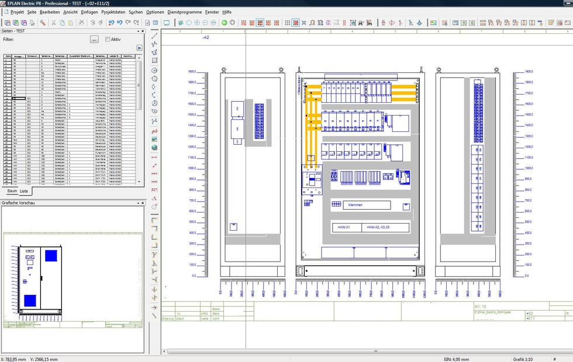
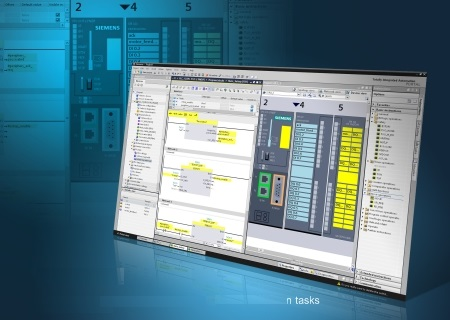

Welkom bij Boelens Techniek Apeldoorn
Ruime ervaring op het gebied van

Onderhoud
- Verzorgen van uw tekenwerk: Autocad, Eplan, See Electrical
- Ontwerpen en bouwen van schakelkasten en panelen
- Elektrotechnisch onderhoud en uitbreiden van bedrijfsinstallaties
- Onderhoud en installeren van Meet en regel technische apparatuur

Industriële Automatisering
- Advies en ontwerpen van industriële automatisering
- Adviseren en ontwerpen van Process automatisering
- Commissioning van Machinebesturingen
- I/O Testen van Machinebesturingen

Management ondersteuning
- A.i. Hoofd Technische dienst
- Project Leidinggevend
- Project Engineering
- Maintenance Engineering
- Reliability Engineering
Ruime ervaring in de volgende industrieën:

Papierproductie
Kunststofrecycling
Drinkwaterwinning en behandeling
Fabriceren van reclame standaards
Vleesverwerkingsindustrie
Placeholder
Ervaren in het opstellen en implementeren van S.A.P. en Ultimo onderhoud management systemen
Gewerkt met Servo technieken, PLC technieken, stoom en condensaat systemen, hydroliek en pneumatiek
Zowel uitvoerend als leidinggevend aan 40 monteurs
Bekend met/ervaring als:
A.i. Hoofd Technische Dienst
Papierfabriek (3,5 jaar) Chef onderhoud
- Aansturen 8 mechanische en 5 elektrotechnische monteurs.
- Voorbereiden en inplannen van machine stops.
- Inplannen en organiseren van externe monteurs.
Chocolade producent (11 mnd.) Hoofd Technische Dienst
- Aansturen 3 monteurs.
- Opzetten onderhoud informatie systeem.
Producent release liners (16 mnd.) Hoofd Technische Dienst
- Aansturen 7 all-round monteurs.
- Implementatie onderhouds informatie systeem Ultimo
Projectleider / Engineer
Chocolade producent
- Project dry-grind uitbreiden productie capaciteit bruine lijn.
- Project witte druppellijn uitwerken, bestellen & plaatsen.
- Voorbereiden en bouwrijp laten maken t.b.v. uitbreiding buiten opslagtanks.
- Ontwerp en vervaardigen van een roerpot t.b.v. opwerk producten.
Producent tissue en hygiëne papier producten
- Voorbereiden en begeleiden van het plaatsen nieuwe tissue lijn met verpakking en transportlijn incl. budget bewaking.
- Diverse proces verbeterprojecten uitgewerkt en laten uitvoeren.
- Diverse veiligheid verbeterprojecten.
- Voorbereiden en verplaatsen van 7 productie lijnen.
- Voorbereiden en begeleiden van het plaatsen nieuwe keuken- en wc rollen lijn met verpakking en transportlijn. Incl. opstellen capex
Producent release liners
- Uitwerken en aanpassen hoofdaandrijving coating machine.
- Hulpmiddelen ontworpen voor het instellen van snijmachines.
- Diverse uitlijningen en proces verbeteringen georganiseerd voor nieuwe coating machine i.v.m. achterblijven productie.
IJzergieterij en verspaning
- CNC bewerkingstation koppeling gemaakt met controle center.
- Vormmachine voorzien van een inloop beveiliging d.m.v. lichtschermen en geïntegreerd in bestaande besturing.
- Uitwerken plannen m.b.t. splitsen centrale luchtvoorziening
- Constructie slijpmachine aangepast i.v.m. trillingen in de machine tijdens slijpen
Kunststof industrie
- Plaatsen van 2 extruderlijnen bestaand uit elk 5 extruders, een vacuumvorm machine, stans gedeelte en inpaklijn met het verzorgen van de interface tussen de onderdelen.
- Ontwerpen van granulaat doseersysteem t.b.v. extruderlijnen.
- Plaatsen van kuipvorm stansmachine.
Maintenance Engineer
Papierfabriek
- Diverse projecten t.b.v. energie besparing & productie verhoging.
- Implementatie S.A.P onderhoud module.
- Optimaliseren productie middelen.
- Onderhoudscontracten bewaken.
- Onderhoudsbudget bewaken.
Vleesverwerkende industrie
- Verbetervoorstellen uitwerken m.b.t. achterblijvende output inpaklijnen.
Waterbedrijf Gelderland
- Onderhouden onderhoud informatie systeem.
- Auditor I.S.O. 9001.
Producent van kabels
- Proces optimaliseren.
- Veel voorkomende storingen in kaart brengen.
- Verbeter plannen opstellen en ingang zetten.
Engineer
Verzorgen tekenwerk t.b.v. uitbreiding reject hal
Industriële Automatisering
- Besturing drukwerk signalering van scheefstand rasterwals & printwals.
- Citect Scada stofvoorbewerking systeem ontworpen en inbedrijfstellen.
- Nieuwe PLC besturing voor gereviseerde klossenzaag machine.
- Vervangen bediening lessenaar balken zaagmachine.
- Uitbreiden dozen rollenbaan transport t.b.v. palletiseren.
- Tijd en snelheid afhankelijke leegloop bewaking rollenmachine ontworpen.
- Besturing bakkenliften aangepast i.v.m beknellingsgevaar en verouderde schakelkasten.
- Snel vrieskast voorzien van nieuwe besturing en stikstof regeling.
- Heftafels hydraulisch systeem vervangen van decentrale naar centrale besturing.
- Inpaklijnen voorzien van printers met koppeling naar ordersysteem t.b.v etikettering product.
- Bediening aanpassen van kleine beton centrale zodat de kleine centrale ook in de grote centrale te bedienen is.
- Uitbreiding bruine druppellijn incl. inpak en afvullijn met een nieuw PLC programma.
- Aanpassen Witte druppellijn machine snelheid incl. aanpassen HMI t.b.v. besturing.
Neem contact op
Fred Boelens
Boelens Techniek Apeldoorn
Voltairestraat 28
7323GL Apeldoorn